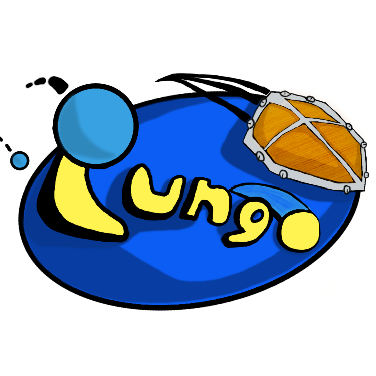
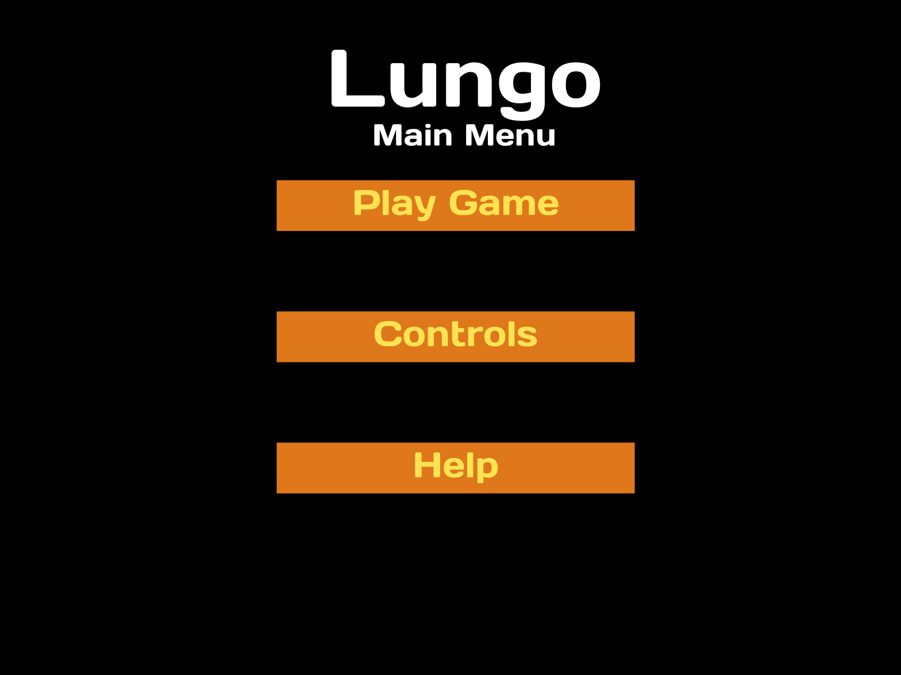
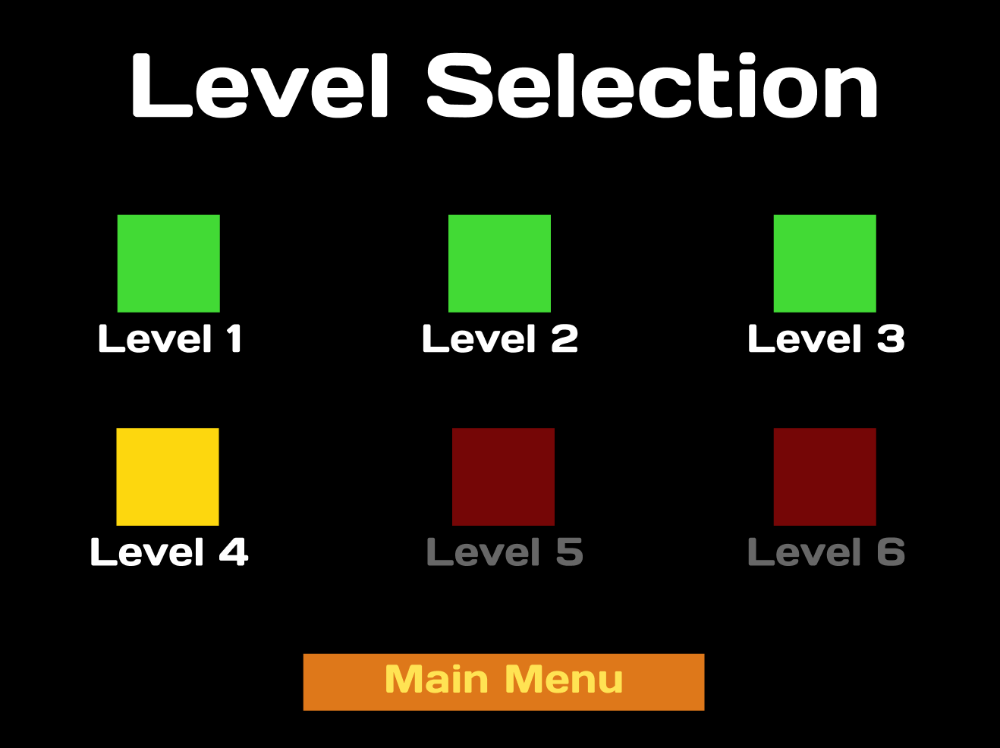
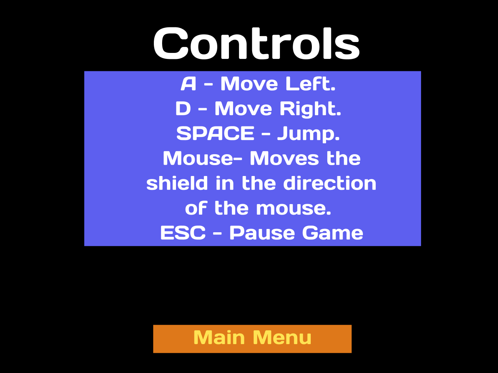
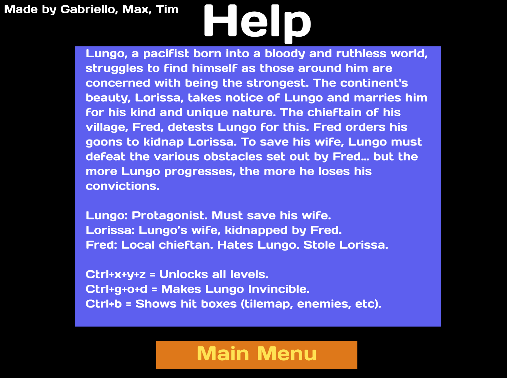
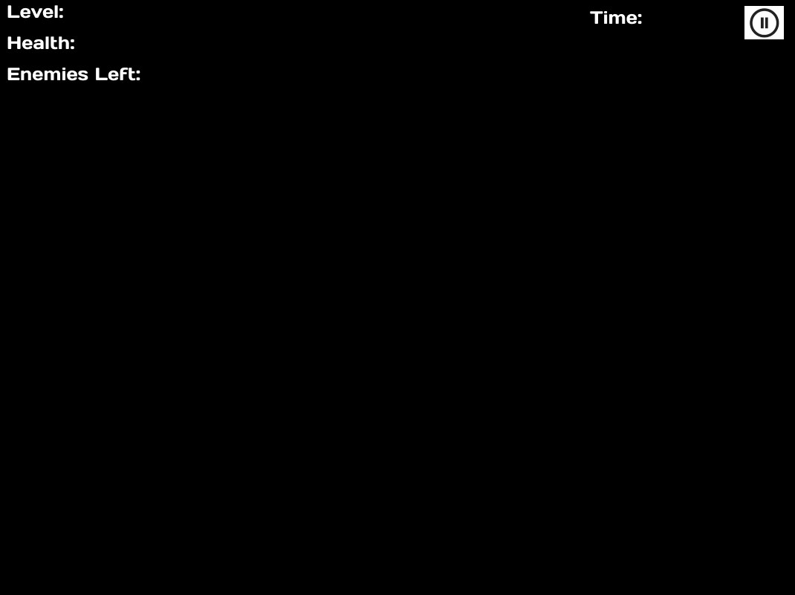

Lungo
Game Design Document
By Gabriello Lima, Max Rinaldi, Timothy Wu

Introduction
This document describes a game called "Lungo", which is designed to be a simple, 2D scroller, constructed by Gabriello Lima, Max Rinaldi, and Timothy Wu for CSE 380 at Stony Brook University. The game will employ sprite-based animation, tiled backgrounds, collision detection, physics, AI, scrolling & gravity, efficient memory management, render threading, and more basic 2D game techniques. The aforementioned techniques will be employed using Wolfie2D as the base game engine, which was designed by Professor Mckenna and Zachary Grandison.
Technology
Lungo will be developed as a web app, hosted on Firebase for all to play. Wolfie2D will be used as the game engine, a game engine developed at Stony Brook for the purpose of creating 2D Games. WebGL will be used as our rendering engine. Bosca Ceoil will be used to create sound effects and music for the game. Artwork will be created using paint.net.
Back Story
Lungo, a pacifist born into a bloody and ruthless world, struggles to find himself as those around him are concerned with being the strongest. The continent's beauty, Lorissa, takes notice of Lungo and marries him for his kind and unique nature. The chieftain of his village, Fred, detests Lungo for this. Fred orders his goons to kidnap Lorissa. To save his wife, Lungo must defeat the various obstacles set out by Fred… but the more Lungo progresses, the more he loses his convictions.
Objective
Lungo’s task is to defeat Fred’s obstacles and save his wife. Guards and hazardous balls controlled by Fred will attempt to intervene and stop him. Unfortunately, Lungo became a pacifist after the war. Luckily, Lungo has his handy-dandy shield, gifted to him by his wife before she was captured. Lungo must reflect the enemy's attacks to both defend himself, and defeat those who oppose him.
Fred is psychotic, and refuses to open the doors to the next level until all enemies have been defeated. However, Fred will make an exception for the balls. Lungo does not have to destroy the balls to progress in the levels.
Gameplay
The game will work like a side scroller, with Lungo able to run left and right, and jump up or down onto platforms and other surfaces such that we may scroll up and down.
Lungo will have to be extra careful as there are two different types of enemies: guards and balls. Guards will attempt to kill Lungo by shooting or throwing things at him. The balls will move throughout the game, damaging Lungo if he touches them. For all enemies, Lungo will be able to deflect or rebound every attack with his shield. If a reflected attack hits an enemy, it will damage or even kill them. After every level, Lungo’s shield will increase in offensive capabilities.
Enemy attacks will have different levels of strength, according to their weapon, or in the case of the balls, their weight. Depending on the strength of the attack, Lungo’s shield will be temporarily out of his control, and will spin haphazardly. Attacks also have weight behind them, which will affect Lungo’s movements. The table detailing the strengths of attacks is as follows:
Attacker | Weapon | Type | Damage | Weight |
Guard | Rocks | Ranged | 1 | 1 |
Guard | Sword | Melee | 2 | 2 |
Guard | Spear | Melee | 2 | 2 |
Guard | Bow | Ranged | 2 | 1 |
Guard | Ax | Ranged | 3 | 2 |
Ball | Self | Melee | 5 | 1-10, depends on ball color (the darker the heavier) |
Fred | ??? | ? | ? | ? |
Controls
This game will be played using both a keyboard and mouse. Once started, use the following:
- A - Move Left.
- D - Move Right.
- SPACE - Jump.
- Mouse- Moves the shield in the direction of the mouse.
- ESC - This pauses the game and presents a pop-up window to the player asking them to continue when they are ready. If a game is not in progress, ESC does nothing.
Graphical User Interface
The GUI views will be as follows:
- This serves as the point of entry for the player, with a fancy graphic that entices the player into playing the game. By clicking anywhere on the screen, the user will be taken to the Main Menu.
- This is the main menu of the game, where the user will have three clickable options available to them, as follows.
- Play Game
- Clicking this will send the player to the Level Selection Screen, where the player can navigate to any level that they have unlocked.
- Clicking this will send the player to the Controls Screen, where they will learn the controls of the game.
- Clicking this will send the player to the Help Screen, where they will be given information about the back story, list the credits, and cheat codes.
- Here, the player will be able to select any level that they have unlocked to play/re-play. This screen will also have a button to return to the Main Menu.
- Here, the player will learn the controls of the game. They will also have a button to return to the Main Menu.
- This screen has plenty of relevant information such as the credits, the back story, and cheat codes. There will also be a button here to return to the Main Menu.
- Cheat codes:
- Ctrl + x + y + z = Unlocks all levels.
- Ctrl + g + o + d = Makes Lungo Invincible.
- Ctrl + b = Shows hit boxes (tilemap, enemies, etc).
- This screen will be where the gameplay takes place. Relevant information for gameplay such as the player health, time elapsed, and the number of remaining enemies.
- The user can press the Esc button or the Pause Button in the GUI to pause the game, bringing up the Pause Screen wherein the game will be paused, with the pause menu showing up in the foreground with the game in the background with a higher opacity to indicate that the game is paused.
- This screen will be displayed when the player hits 0 health. After a death animation, they will be sent to this screen where the game will remain until the user presses a “Return to Main Menu” screen to return to the Main Menu.
- This is the screen that will be shown on top of the In-Game Screen when the user pauses. From here, the user has two options:
- There will be a button to resume the game.
- The user can also press the Esc button to unpause the game as well.
- There will be a button to return to the Main Menu. All the user’s current progress on the stage will be lost if they decide to do so.
Artwork
All artwork in the game will be original. The following needs to be created:
- Lungo- Lungo will wear his standard tribal outfit. Lungo will need animations for:
- Walking Right
- Walking Left
- Jumping Right
- Jumping Left
- Jumping Up
- Taking Damage
- Dying
- Moving shield
- Reflecting attacks
- Guards- Guards will wear outfits depending on their roles. Each will require animations for:
- Walking Right
- Walking Left
- Jumping Right
- Jumping Left
- Jumping Up
- Taking Damage
- Dying
- Attacking
- Cannon Balls - Simple sprites, each require animations for:
- Floating about the level
- Colliding with something below it
- Colliding with something above it
- Colliding with something to the right of it
- Colliding with something to the left of it
Ceiling, Floor, & Wall Tiles - The levels will have multiple floors and platforms to jump onto and off of. We'll use simple tiles for all walkable/collidable surfaces. These tiles will have to clearly define where the walkable surface is.
Chamber Background Tiles - For non-collidable tiles that will go in the background of the chamber, we'll just use tiles arranged in a pattern depending on the level’s scenery. Lungo will progress from being outside, to inside Fred’s castle.
Sound Effects
- Jumping
- Landing from jump/a height
- Enemies shooting (depending on ball type/weapon)
- Enemies dying
- Enemies aggroing onto you
- Reflecting projectiles (depending on projectile)
- Sound effect for when shield is uncontrollable
- Taking damage
- Player dying
- Level finish
- Button click sounds (screen transitions)
Music
- Main menu music
- Per level music.
- Boss music.
- Death music.
- Game over music? The music that plays in the game-over menu.
Game GUI Images
Splash Screen
Main Menu

Level Selection Screen

Controls Screen

Help Screen

In Game Screen
